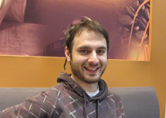

Berkin Berkcan Çırak
Web Programcısı
| Uyruğu: | T.C. |
| Doğum Tarihi: | 13 Ağustos 1981 |
| Cinsiyet: | Erkek |
| Medeni Hali: | Bekar |
| Sürücü Belgesi: | B Sınıfı |
İrtibat Bilgileri
Görele Mahallesi D3 Kapısı No.317 Acarkent / Beykoz / İSTANBUL
+90 532 5141809
berkin@kuyabiye.com
+90 532 5141809
berkin@kuyabiye.com
What i do?
I am a web developer. I do psd slicing, and writing the
Profesyonel İlgi Alanları
Symfony Framework, PHP Uygulamalarında Güvenlik, PHP Projelerinde Template Engine Kullanımı, İnternet Projelerinde İstatistik ve SEO, Form Standartizasyonu, Kodlama Kılavuzları
Anahtar Kelimeler
Dürüstlük, Takım Çalışması, Disiplin, Sürekli Gelişim, Yaratıcılık
Eğitim
| Lisans: | Hacettepe Üniversitesi Fizik Mühendisliği |
| Lise: | Ankara Atatürk Anadolu Lisesi |
Kariyer Hedefi
Yeterliliklerime, yapabilirliğime, sektörel bilgi birikimime ve tecrübeme uygun bir pozisyon bularak bu pozisyonun gereklerini en iyi şekilde yerine getirmek ve vizyonumu gerçekleştirme hayalimde adım atabilmek.
Deneyim
| 02.2008 05.2009 | Siyah Balık Ltd. Kurucu Ortak & Web Programcısı www.fulbright.org.tr www.emirudlari.com www.armapr.com www.emtains.com www.storemia.com www.erdoganlarbisiklet.com www.elaresort.com www.gad.com.tr www.kayra.com.tr Henüz yayınlanmamış projeler www.criball.com www.sarapkulturu.com Bu projelerin bir kısmına iş bitimi sonrasında üçüncü şahıslarca müdahalede bulunulmuştur. |
| 02.2007 08.2007 | Bakay Telekomunikasyon Ltd. Web Programcısı GSM şirketlerinin altyapıları üzerine yapılan geliştirmelerle çeşitli iletişim ürünleri (SMS hizmetleri, anlık sohbet v.d.) yazılımlarının üretimi ve geliştirilmesi. |
| 09.2005 02.2007 | Mortel Telekom A.Ş. Web Programcısı Şirketin iş modelinin üzerine kurulu olduğu portalın yazılması ve geliştirilmesi. İlgili dönemde sosyal ağ, anlık haber modülleri, ajanda v.d. birçok uygulamaya sahip bu portal 100.000 aktif kullanıcıya ulaşmıştır. |
| 11.2004 08.2005 | Erasmus Bilgi Teknolojileri Ltd. Web Programcısı Şirket bünyesinde ve ortaklıklar yoluyla çeşitli alanlarda web projeleri üretilmiştir. |
Diller
İngilizce
Okuma: Çok iyi, Yazma: İyi, Konuşma: İyi
Okuma: Çok iyi, Yazma: İyi, Konuşma: İyi
Yeterlilikler
İlgi Alanları
Yoga, Yamaç Paraşütü, Linux, Açık Kaynak Yazılımlar, Müzik:www.last.fm/user/crecass, Gitar